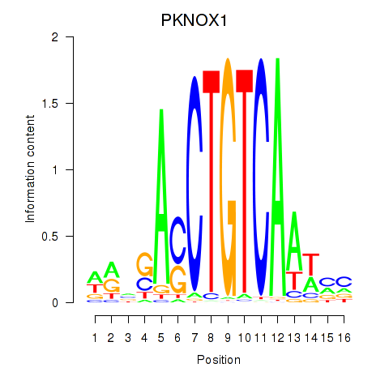
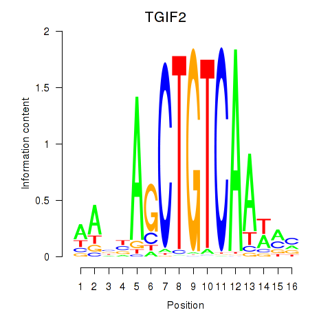

Motif ID: PKNOX1_TGIF2
Z-value: 0.465


Transcription factors associated with PKNOX1_TGIF2:
| Gene Symbol | Entrez ID | Gene Name |
|---|---|---|
| PKNOX1 | ENSG00000160199.10 | PKNOX1 |
| TGIF2 | ENSG00000118707.5 | TGIF2 |
![](http://string-db.org/api/image/network?network_flavor=evidence&limit=0&species=9606&caller_identity=MARA&identifiers=9606.ENSP00000364270%0D9606.ENSP00000295379%0D9606.ENSP00000350049%0D9606.ENSP00000265026%0D9606.ENSP00000417659%0D9606.ENSP00000377428%0D9606.ENSP00000362549%0D9606.ENSP00000260187%0D9606.ENSP00000462879%0D9606.ENSP00000396722%0D9606.ENSP00000395995%0D9606.ENSP00000368790%0D9606.ENSP00000255082%0D9606.ENSP00000368952%0D9606.ENSP00000277575%0D9606.ENSP00000281471%0D9606.ENSP00000470389%0D9606.ENSP00000016913%0D9606.ENSP00000295743%0D9606.ENSP00000387928%0D9606.ENSP00000449309%0D9606.ENSP00000311364%0D9606.ENSP00000334922%0D9606.ENSP00000292807%0D9606.ENSP00000339521%0D9606.ENSP00000344087%0D9606.ENSP00000318113%0D9606.ENSP00000368396%0D9606.ENSP00000337450%0D9606.ENSP00000317904%0D9606.ENSP00000262102%0D9606.ENSP00000320147%0D9606.ENSP00000330862%0D9606.ENSP00000269080%0D9606.ENSP00000383587%0D9606.ENSP00000298892%0D9606.ENSP00000261643%0D9606.ENSP00000359990%0D9606.ENSP00000472778%0D9606.ENSP00000264951%0D9606.ENSP00000379383%0D9606.ENSP00000340409%0D9606.ENSP00000313851%0D9606.ENSP00000339973%0D9606.ENSP00000327959%0D9606.ENSP00000281317%0D9606.ENSP00000447879%0D9606.ENSP00000311862%0D9606.ENSP00000296122%0D9606.ENSP00000317327%0D9606.ENSP00000307272%0D9606.ENSP00000450895%0D9606.ENSP00000469592%0D9606.ENSP00000358159%0D9606.ENSP00000310120%0D9606.ENSP00000362674%0D9606.ENSP00000424381%0D9606.ENSP00000245787%0D9606.ENSP00000350541%0D9606.ENSP00000360593%0D9606.ENSP00000304845%0D9606.ENSP00000308928%0D9606.ENSP00000382107%0D9606.ENSP00000350098%0D9606.ENSP00000355208%0D9606.ENSP00000359928%0D9606.ENSP00000303174%0D9606.ENSP00000471113%0D9606.ENSP00000381590%0D9606.ENSP00000281437%0D9606.ENSP00000327009%0D9606.ENSP00000356549%0D9606.ENSP00000261708%0D9606.ENSP00000334840%0D9606.ENSP00000325423%0D9606.ENSP00000412267%0D9606.ENSP00000307164%0D9606.ENSP00000361859%0D9606.ENSP00000321388%0D9606.ENSP00000252971%0D9606.ENSP00000243611%0D9606.ENSP00000297991%0D9606.ENSP00000373539%0D9606.ENSP00000318804%0D9606.ENSP00000380505%0D9606.ENSP00000288985%0D9606.ENSP00000261263%0D9606.ENSP00000389760%0D9606.ENSP00000424126%0D9606.ENSP00000432768%0D9606.ENSP00000318177%0D9606.ENSP00000266483%0D9606.ENSP00000309644%0D9606.ENSP00000315702%0D9606.ENSP00000273857%0D9606.ENSP00000405514%0D9606.ENSP00000356121%0D9606.ENSP00000220584%0D9606.ENSP00000380942%0D9606.ENSP00000382157%0D9606.ENSP00000357880)
{kind=link}
{kind=link}
{kind=link}
{kind=link}
Top targets:
Gene overrepresentation in biological_process category:
| Log-likelihood per target | Total log-likelihood | Term | Description |
|---|---|---|---|
| 0.1 | 0.2 | GO:0036333 | hepatocyte homeostasis(GO:0036333) response to tetrachloromethane(GO:1904772) |
| 0.1 | 0.3 | GO:0071409 | cellular response to cycloheximide(GO:0071409) |
| 0.1 | 0.2 | GO:0003050 | regulation of systemic arterial blood pressure by atrial natriuretic peptide(GO:0003050) |
| 0.1 | 0.3 | GO:0070295 | renal water absorption(GO:0070295) |
| 0.1 | 0.2 | GO:0071921 | establishment of sister chromatid cohesion(GO:0034085) cohesin loading(GO:0071921) regulation of cohesin loading(GO:0071922) |
| 0.1 | 0.2 | GO:0002302 | CD8-positive, alpha-beta T cell differentiation involved in immune response(GO:0002302) |
| 0.0 | 0.1 | GO:1904049 | negative regulation of spontaneous neurotransmitter secretion(GO:1904049) |
| 0.0 | 0.1 | GO:0035526 | retrograde transport, plasma membrane to Golgi(GO:0035526) |
| 0.0 | 0.1 | GO:0006597 | spermine biosynthetic process(GO:0006597) |
| 0.0 | 0.1 | GO:0090202 | transcriptional activation by promoter-enhancer looping(GO:0071733) gene looping(GO:0090202) dsDNA loop formation(GO:0090579) |
| 0.0 | 0.1 | GO:0009236 | cobalamin biosynthetic process(GO:0009236) |
| 0.0 | 0.1 | GO:0070175 | positive regulation of enamel mineralization(GO:0070175) |
| 0.0 | 0.1 | GO:1990108 | protein linear deubiquitination(GO:1990108) |
| 0.0 | 0.1 | GO:0070429 | regulation of toll-like receptor 5 signaling pathway(GO:0034147) negative regulation of toll-like receptor 5 signaling pathway(GO:0034148) negative regulation of nucleotide-binding oligomerization domain containing 1 signaling pathway(GO:0070429) tolerance induction to lipopolysaccharide(GO:0072573) |
| 0.0 | 0.1 | GO:0060748 | tertiary branching involved in mammary gland duct morphogenesis(GO:0060748) |
| 0.0 | 0.1 | GO:0007525 | somatic muscle development(GO:0007525) |
| 0.0 | 0.1 | GO:0007352 | zygotic specification of dorsal/ventral axis(GO:0007352) |
| 0.0 | 0.1 | GO:0097359 | UDP-glucosylation(GO:0097359) |
| 0.0 | 0.0 | GO:1902232 | lymphoid lineage cell migration(GO:0097534) lymphoid lineage cell migration into thymus(GO:0097535) regulation of positive thymic T cell selection(GO:1902232) |
| 0.0 | 0.2 | GO:0045959 | regulation of complement activation, classical pathway(GO:0030450) negative regulation of complement activation, classical pathway(GO:0045959) |
| 0.0 | 0.1 | GO:0071233 | cellular response to leucine(GO:0071233) |
| 0.0 | 0.1 | GO:0098582 | innate vocalization behavior(GO:0098582) |
| 0.0 | 0.0 | GO:0021793 | chemorepulsion of branchiomotor axon(GO:0021793) |
| 0.0 | 0.1 | GO:0060298 | positive regulation of sarcomere organization(GO:0060298) |
| 0.0 | 0.1 | GO:0070980 | biphenyl catabolic process(GO:0070980) |
| 0.0 | 0.1 | GO:0008204 | ergosterol biosynthetic process(GO:0006696) ergosterol metabolic process(GO:0008204) |
| 0.0 | 0.0 | GO:0002728 | negative regulation of natural killer cell cytokine production(GO:0002728) |
| 0.0 | 0.0 | GO:2001247 | positive regulation of phosphatidylcholine biosynthetic process(GO:2001247) |
| 0.0 | 0.1 | GO:0045658 | regulation of neutrophil differentiation(GO:0045658) negative regulation of neutrophil differentiation(GO:0045659) |
| 0.0 | 0.2 | GO:0006449 | regulation of translational termination(GO:0006449) |
| 0.0 | 0.1 | GO:0061762 | CAMKK-AMPK signaling cascade(GO:0061762) |
| 0.0 | 0.2 | GO:0006307 | DNA dealkylation involved in DNA repair(GO:0006307) |
| 0.0 | 0.1 | GO:0023021 | termination of signal transduction(GO:0023021) |
| 0.0 | 0.1 | GO:0035720 | intraciliary anterograde transport(GO:0035720) |
| 0.0 | 0.0 | GO:0061763 | multivesicular body-lysosome fusion(GO:0061763) |
| 0.0 | 0.0 | GO:0072194 | detection of endogenous stimulus(GO:0009726) kidney smooth muscle tissue development(GO:0072194) |
| 0.0 | 0.1 | GO:0010157 | response to chlorate(GO:0010157) |
Gene overrepresentation in cellular_component category:
| Log-likelihood per target | Total log-likelihood | Term | Description |
|---|---|---|---|
| 0.0 | 0.1 | GO:0032937 | SREBP-SCAP-Insig complex(GO:0032937) |
| 0.0 | 0.1 | GO:0034388 | Pwp2p-containing subcomplex of 90S preribosome(GO:0034388) |
| 0.0 | 0.1 | GO:0044326 | dendritic spine neck(GO:0044326) |
| 0.0 | 0.1 | GO:0000172 | ribonuclease MRP complex(GO:0000172) |
| 0.0 | 0.1 | GO:0097255 | R2TP complex(GO:0097255) |
| 0.0 | 0.1 | GO:0031466 | Cul5-RING ubiquitin ligase complex(GO:0031466) |
| 0.0 | 0.1 | GO:0000110 | nucleotide-excision repair factor 1 complex(GO:0000110) |
Gene overrepresentation in molecular_function category:
| Log-likelihood per target | Total log-likelihood | Term | Description |
|---|---|---|---|
| 0.1 | 0.3 | GO:0015254 | glycerol channel activity(GO:0015254) |
| 0.1 | 0.3 | GO:0004441 | inositol-1,4-bisphosphate 1-phosphatase activity(GO:0004441) inositol-1,3,4-trisphosphate 1-phosphatase activity(GO:0052829) |
| 0.0 | 0.1 | GO:0001156 | TFIIIC-class transcription factor binding(GO:0001156) |
| 0.0 | 0.3 | GO:0004534 | 5'-3' exoribonuclease activity(GO:0004534) |
| 0.0 | 0.1 | GO:0019808 | polyamine binding(GO:0019808) |
| 0.0 | 0.1 | GO:0050115 | myosin-light-chain-phosphatase activity(GO:0050115) |
| 0.0 | 0.2 | GO:0003747 | translation release factor activity(GO:0003747) translation termination factor activity(GO:0008079) |
| 0.0 | 0.1 | GO:0004583 | dolichyl-phosphate-glucose-glycolipid alpha-glucosyltransferase activity(GO:0004583) |
| 0.0 | 0.2 | GO:0046976 | histone methyltransferase activity (H3-K27 specific)(GO:0046976) |
| 0.0 | 0.1 | GO:0051996 | farnesyl-diphosphate farnesyltransferase activity(GO:0004310) squalene synthase activity(GO:0051996) |
| 0.0 | 0.1 | GO:0003980 | UDP-glucose:glycoprotein glucosyltransferase activity(GO:0003980) |
| 0.0 | 0.1 | GO:0043141 | ATP-dependent 5'-3' DNA helicase activity(GO:0043141) |
| 0.0 | 0.1 | GO:0004311 | farnesyltranstransferase activity(GO:0004311) |
| 0.0 | 0.0 | GO:0016964 | alpha-2 macroglobulin receptor activity(GO:0016964) |
| 0.0 | 0.1 | GO:0043140 | ATP-dependent 3'-5' DNA helicase activity(GO:0043140) |
| 0.0 | 0.0 | GO:0070012 | oligopeptidase activity(GO:0070012) |
| 0.0 | 0.2 | GO:0031433 | telethonin binding(GO:0031433) |
| 0.0 | 0.0 | GO:0043398 | HLH domain binding(GO:0043398) calcium-induced calcium release activity(GO:0048763) |
Gene overrepresentation in C2:CP:REACTOME category:
| Log-likelihood per target | Total log-likelihood | Term | Description |
|---|---|---|---|
| 0.0 | 0.3 | REACTOME_PASSIVE_TRANSPORT_BY_AQUAPORINS | Genes involved in Passive Transport by Aquaporins |
| 0.0 | 0.3 | REACTOME_MRNA_DECAY_BY_5_TO_3_EXORIBONUCLEASE | Genes involved in mRNA Decay by 5' to 3' Exoribonuclease |
|
|
|
|